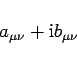
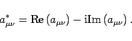

Reelle Matrizen bestehen aus reellen Elementen, komplexe Matrizen aus komplexen Elementen. Man kann eine Matrix, die aus den komplexen Elementen
|  | (4.2a) |
besteht, in zwei Matrizen  und
und  der Form
der Form
aufspalten, die beide nur reelle Zahlen enthalten.
Zwischen den Elementen einer komplexen Matrix  und der zu ihr konjugiert komplexen Matrix besteht die Beziehung
und der zu ihr konjugiert komplexen Matrix besteht die Beziehung
|  | (4.2c) |